Round 20 emitted geometry
Tarnwatch Fold
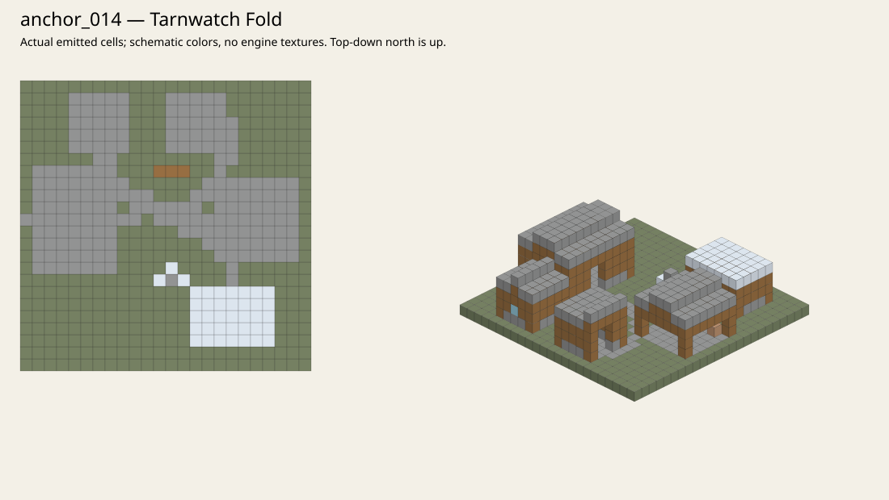
Whitebridge Market Close
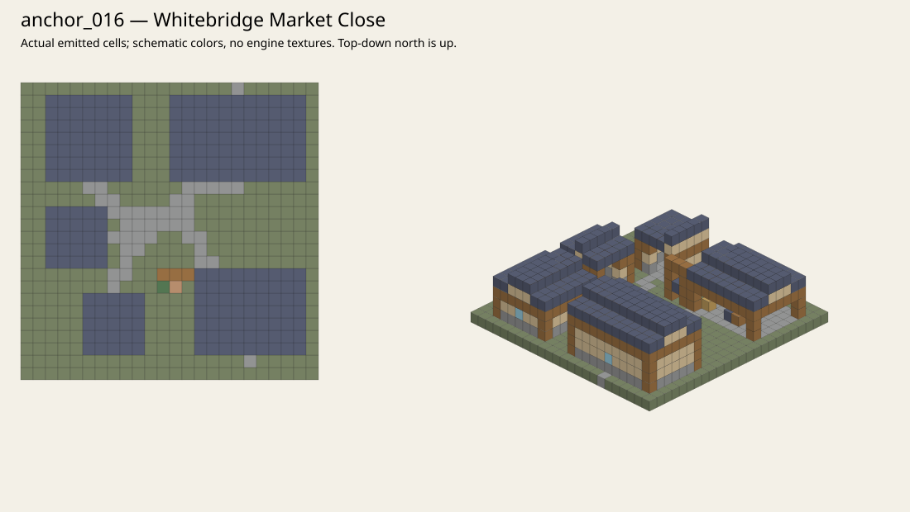
Lorindor Berrycourt
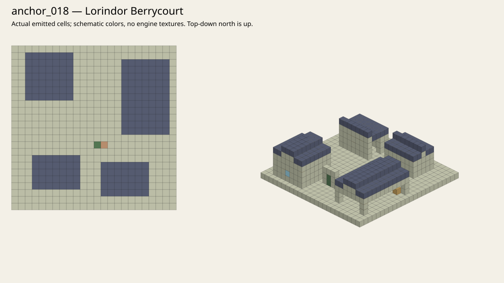
Whisperreed Landing
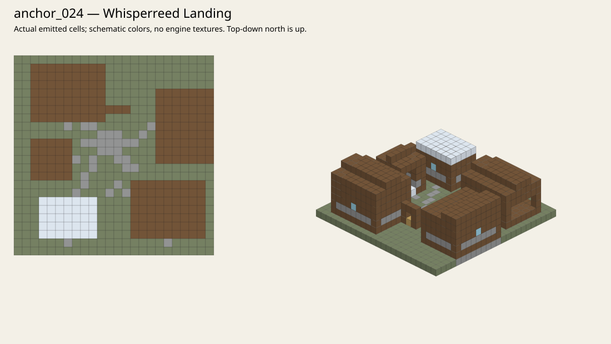
Splitbolt Station
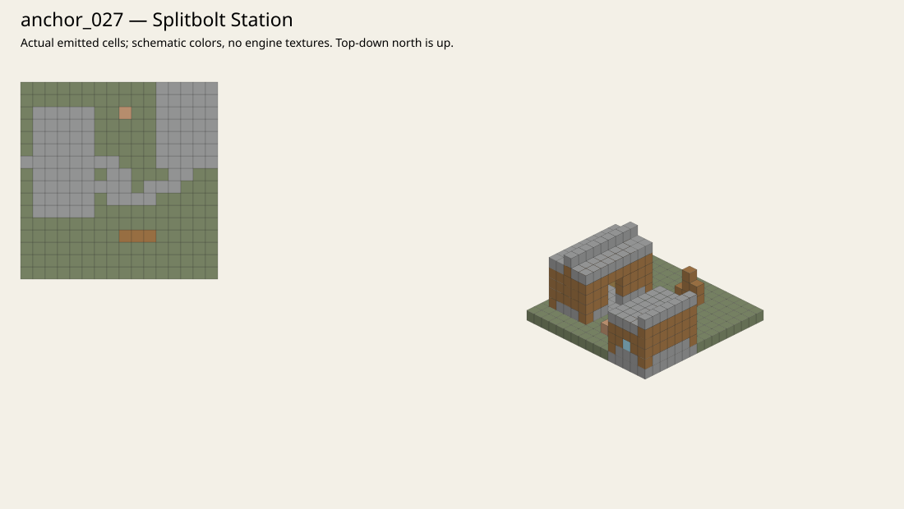
Ashveil Watch
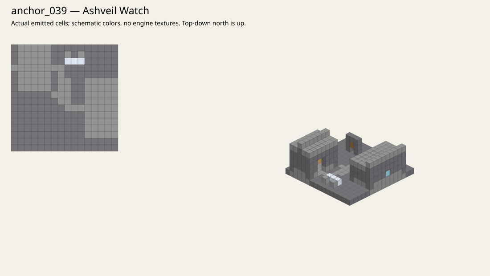
Thunderstep Watch
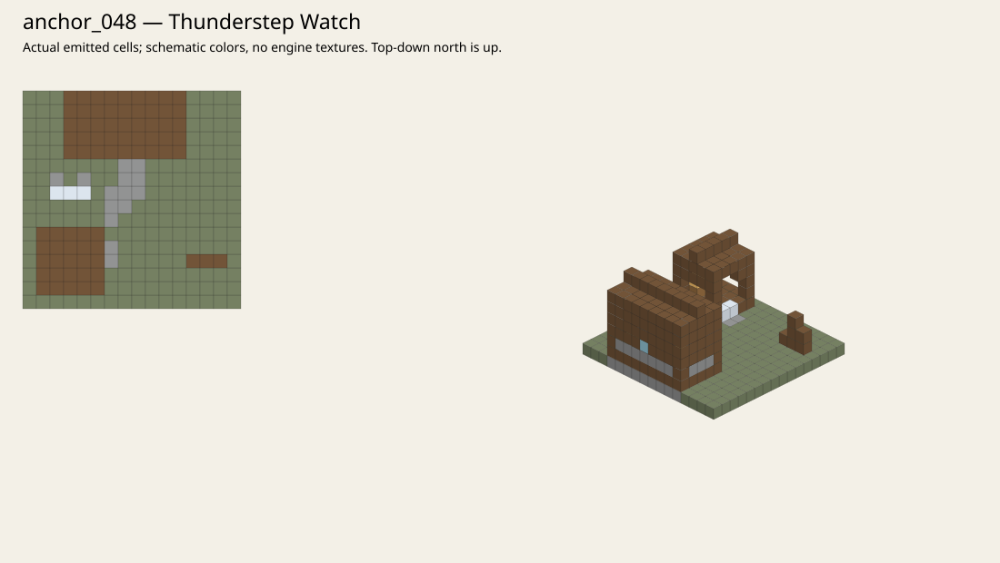
Slatehook Hideout
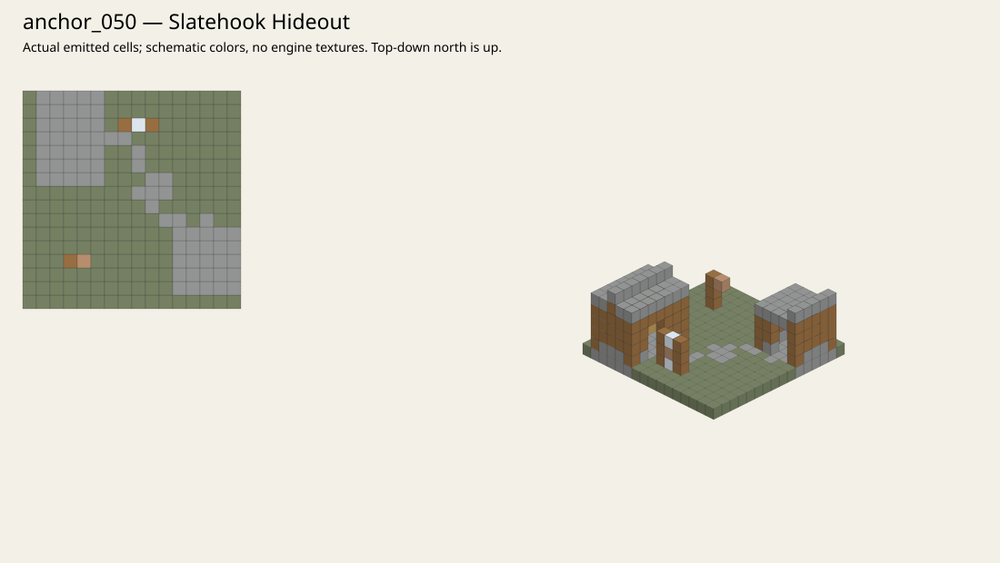
Tarncut Mine
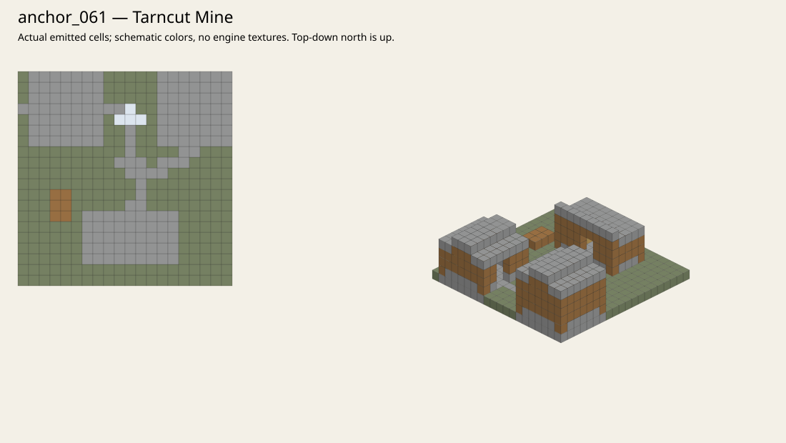
Siltbasket Camp
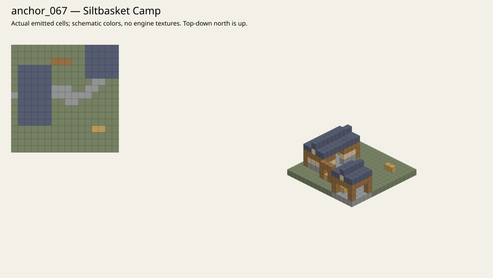
Ashen Wheelbreak
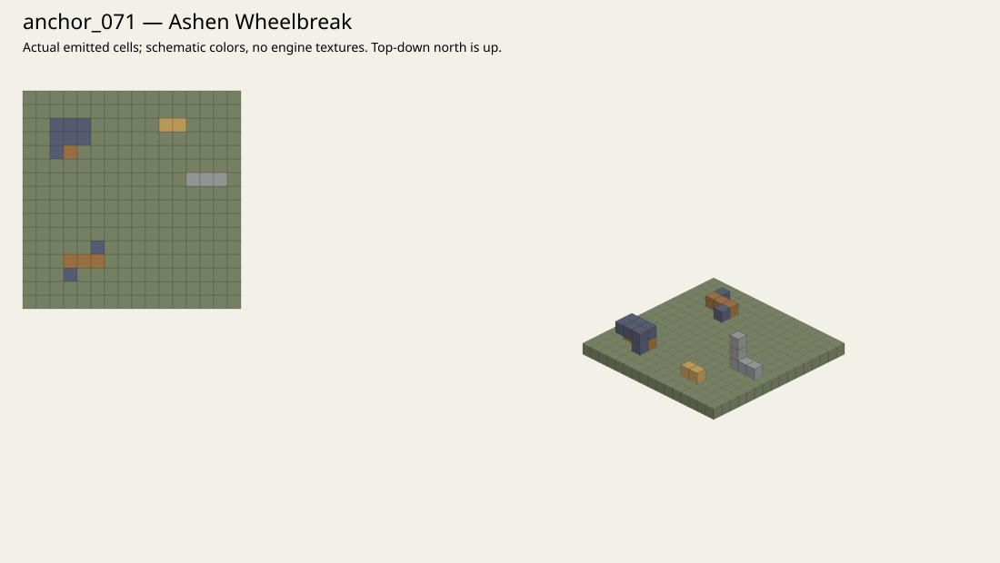
Wyrmglass Dragonspire
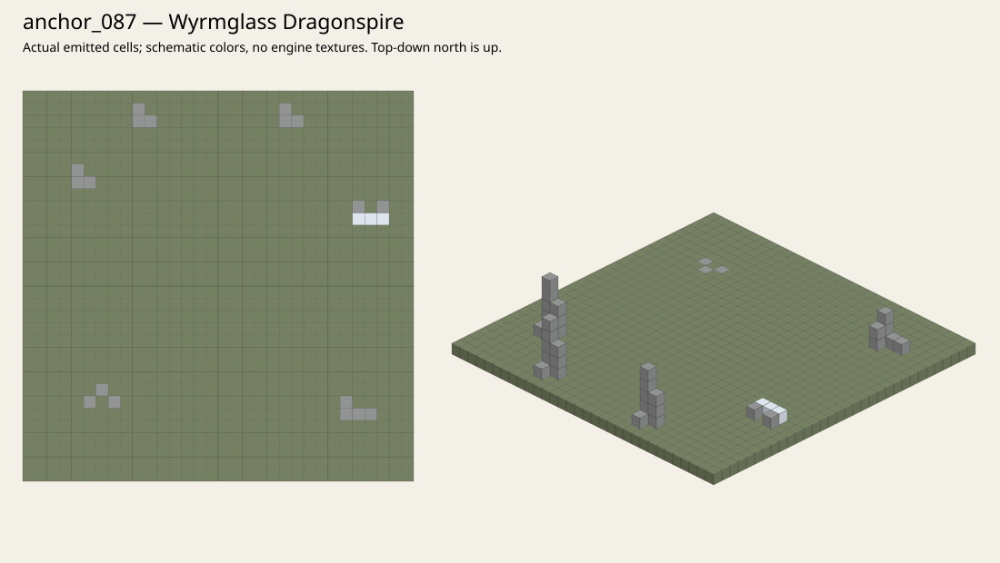
Wyrmglass Fault Camp
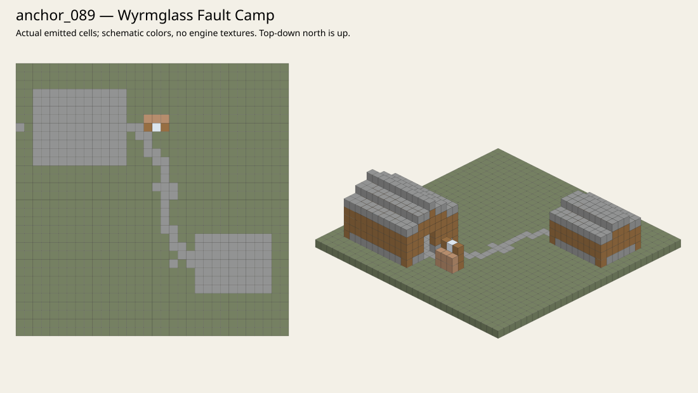
Grimtusk's Rooting
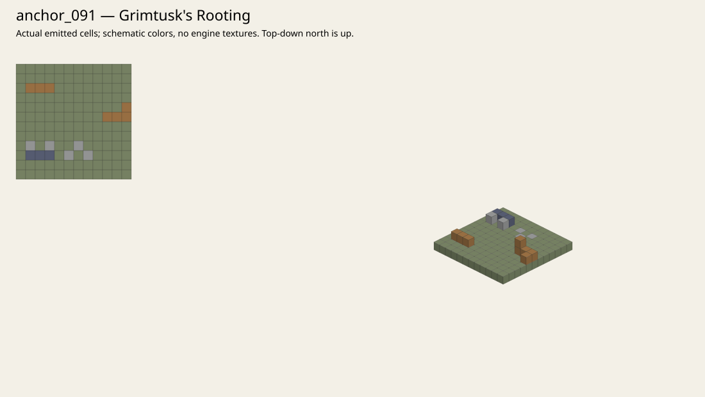
Bonerattle's Siege Halt
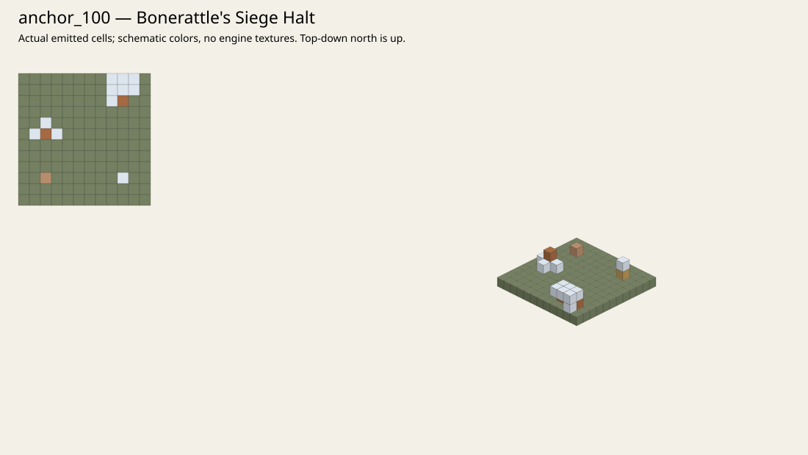